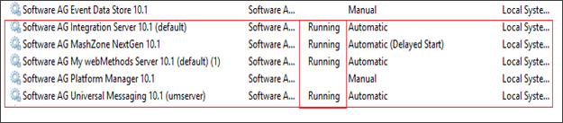
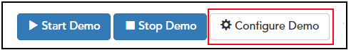
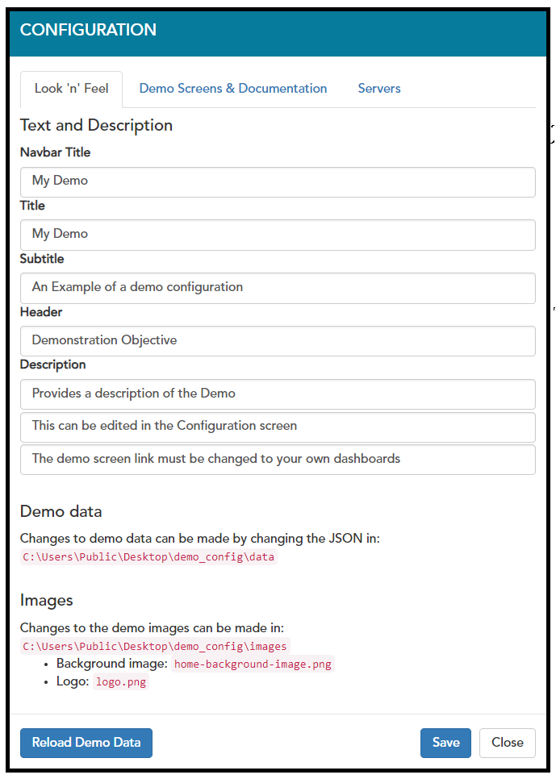

User Guide
This section describes the demo setup and configuration in more detail, including how to customise the demo configuration.
Check the Platform is Running
Most of the products, except Apama and Terracotta, are installed as Windows services which are automatically started when the machine is started. To check that the product services are running correctly:
- Log into the VM using Remote Desktop with your SoftwareAG User credentials.
- Double-click on the ‘Start Services.bat’ script on the Desktop. This script will start all of the necessary services.
Note: Users should only need to perform this step once after creating the VM instance.
If there are still problems with the products not running, or the script failed:
-
Log into the VM using Remote Desktop with your SoftwareAG User credentials.
-
Open the Windows Services and confirm that the services listed in below image are ‘Running’. To do this:
- Right click on the taskbar and select ‘Task Manager’.
- Go to the ‘Services’ tab and click on the ‘Open Services’ link at the bottom of window to list of all the services that are running on the VM.
- Check that the services highlighted below have status of ‘Running’.
- If any service does not have a status of ‘Running’, you must start the service by right clicking on service and selecting ‘start’. Or alternatively, double-click on the ‘Start Services.bat’ script on the Desktop.

Note: Software AG Mashzone Nextgen service should be the last one to be started to ensure that the services it connects to are all available.
Opening the Demo Home page
Double-click on ‘Demo Home’ shortcut on the public Desktop to open the home page. Alternatively navigate to following URL using your internet browser (preferably Google Chrome).
http://sagbase.eur.ad.sag:8585/ConnectedServices#!/home
In either case, you may be asked for the following credentials:
- Username: Administrator
- Password: manage
Demo Configuration
The configuration of the products used in the demo is controlled by the following file:
C:\Users\Public\Desktop\demo_config\config\democonfig.json
-
Changing the Demo Configuration
The demo configuration can be viewed by clicking on the ‘Configure Demo’ button.

In the ‘Configuration’ window, the user can view the following tabs:
- Look’n’Feel: This section shows the configuration for the main demo landing page e.g. Title, sub-title, description, etc. It also provides a reference for where to change the demo data and images used in the demo.
- Demo Screens & Documentation: This section allows you to define the links for the various tabs that will be used in the demo, and whether they should be embedded into the demo frame or opened as separate tabs in the browser.
- Servers: This section allows you to modify and add multiples servers for the demo setups. This is used to ‘connect’ other Demo Recipe demos together to form richer demos.

Changing the Demo Master Data
The user can change both the Master Data and the images for the demo. Once you have modified the Master Data set, you need to restart the demo before the changes take effect. These steps are covered below in Stopping the Demo and Starting the Demo.
Master Data
The Master Data for the demo is stored in one or more JSON files in the following directory:
C:\Users\Public\Desktop\demo_config\data
The data descriptions inside this file can be amended to ensure that the products and categories match the industry which you wish to demo. Some demos may have a number of alternative master data sets available for different segments or industries. These are available under the ‘Alternative Demo Configurations’ folder on the public desktop. The original master data set can be deleted and replaced by the ones in ‘Alternative Demo Configurations’ folder.
Images
In addition to amending the data in the JSON file, you are also able to replace some of the images which will be displayed inside the demo. The images are located in the following folder:
C:\Users\Public\Desktop\demo_config\images
Note: Ensure that when you replace the images, the filenames remain the same as they may be referenced inside the Master Data and elsewhere in the demo.
For further details on how to customise the Master Data for the Demo Recipes, see the ‘Master Data’ section of the ‘Demo Recipe How-To’ guide in SolutionBook.
Starting the Demo
To start the demo:
- Check that the demo isn’t already running (see Stopping the Demo).
- Click the ‘Start Demo’ button on the ‘Home’ page to start the Demo.

- The Demo will be running shortly after you see the message ‘Demo Started’.

Note: In some cases, there may be a short delay after the message is displayed before the demo is fully operational. This is expected, and is typically due to the creation of historic data, creation of simulators, etc.
Note: If you have made modifications to the Master Data (see Changing the Demo Master Data), this will be loaded when the demo is restarted.
Stopping the Demo
The demo can be stopped by clicking the ‘Stop Demo’ button on ‘Home’ page.

Note: The data from the demo will be persisted after stopping the demo, and will be re-loaded after the demo is restarted.